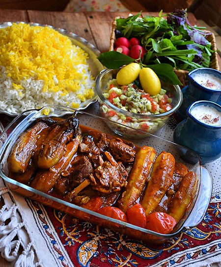

Khoresht Bademjoumn

Disclaimer: I am not Persian. This recipe my mother learned from Fatima
in Tehran when we lived there in 1973. I grew up eating this dish and
learned it at my mother's elbow. It was also a company dish and many
people claiming to hate eggplant enjoyed this dish.
Ingredients
- 2 cups basmati rice
- 1 pound eggplant, sliced into 1-inch rounds
- 1 pound beef stew meat
- 4 cups water
- 1 teaspoon ground cinnamon
- ½ teaspoon ground turmeric
- 2 tablespoons olive oil
- 1 large onion, chopped
- 1 (12 ounce) can diced tomatoes
- 1 (12 ounce) can tomato sauce
- 1 teaspoon salt as needed
- ¼ cup butter
- 1 tablespoon water
Directions
-
Rinse rice in a sieve until water runs clear.
Pour into a bowl, cover with water.
Leave to soak for 1 hour or overnight.
-
Toss eggplant with salt in a separate bowl;
let set for 1 hour. Rinse salt from eggplant in a colander;
cut into 1-inch cubes.
-
Toss stew meat with cinnamon and turmeric in a separate bowl.
-
Heat oil in a large skillet over medium-high heat.
Add stew meat and cook until browned on all sides,
about 5 minutes. Remove from pan; set aside.
Add eggplant, onion, and diced tomatoes to the skillet;
cook and stir until onion is translucent, about 7 minutes.
Return stew meat to the pan; add tomato sauce.
Cover skillet and lower heat to medium-low;
cook until meat is tender and sauce has thickened,
about 40 minutes.
-
While the beef is cooking, prepare the rice.
Bring 4 cups water to a rapid boil in a saucepan;
drain rice. Add rice and 1 teaspoon salt to saucepan;
boil until partially cooked, about 11 minutes.
Drain rice in sieve; return saucepan to medium heat.
Melt 2 tablespoons butter and 1 tablespoon water together in the saucepan.
Spoon rice back into saucepan a spoonful at a time.
Dot remaining butter on top of the rice,
cover tightly and lower heat to medium-low; cook for 30 minutes.
-
Remove both the rice and the eggplant mixture from heat
and let stand for 10 minutes. Before serving,
carefully place a serving dish on top of the saucepan
and invert rice onto serving dish. Transfer stew into
a serving bowl and serve with rice.
Back to top
Back to home page